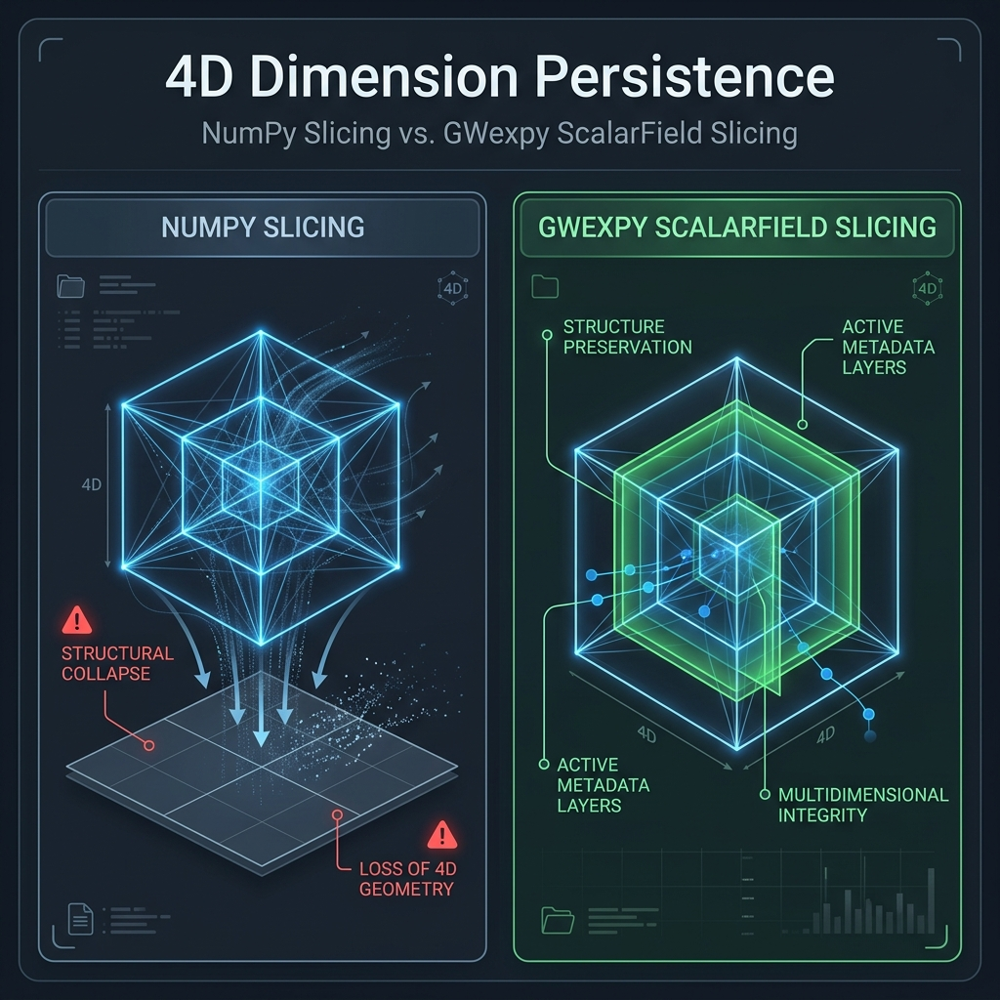

Scalar Field Slicing Guide (Why 4D is Preserved)
Note
Who should read this page?
Refer to this guide if you use ScalarField and have the following questions:
Why does
field[0]remain 4D instead of becoming a 1D array?Why do I get
Shape Mismatcherrors during indexing operations?When is it safe to use
squeeze(), and when should it be avoided?
This guide explains why ScalarField always maintains its 4-dimensional structure during indexing operations. This differs from the standard behavior of NumPy or GWpy and is designed as an “invariant” to ensure the integrity of multidimensional physical data.
At a Glance
The summary table below stays compact to match the shared docs table styling. On narrow screens, horizontal scrolling may be the easiest way to read every column.
Item |
Details |
|---|---|
Page Role |
Guide |
Audience |
Users confused by |
Prerequisites |
Basic familiarity with |
Use Cases |
Understand why |
Search Keywords |
|
On This Page
Why Always Maintain “4D”?
A ScalarField represents a physical “field” with four axes: (time, frequency, x, y). The reasons for not reducing dimensions (Rank Loss) like NumPy does are based on the Four Pillars of Persistence:
Domain Protection: Reducing dimensions causes the loss of metadata associated with those axes (e.g.,
t0,f0,dx), making it impossible to map back to the original physical space.FFT/Transformation Consistency: Always being 4D allows immediate multidimensional operations like
fft(),ifft(), andspatial_filter()on any slice.Stream Processing Safety: The number of dimensions remains constant when passing objects between functions, improving program robustness.
Broadcast Consistency: Dimensional alignment (
reshape) intent becomes explicit in the code because the object is always 4D.
NumPy vs GWexpy Slicing Behavior

Operation Example |
Result Shape (NumPy) |
Result Shape (Field) |
Physical Meaning |
|---|---|---|---|
|
3D (Rank Loss) |
4D (1, F, X, Y) |
Snapshot at a specific time (metadata preserved) |
|
2D (Rank Loss) |
4D (T, F, 1, 1) |
Time-series at a specific spatial point (metadata preserved) |
|
4D (Maintained) |
4D (10, F, X, Y) |
Time interval extraction |
Caution
Critical Warning: Using .squeeze()
When you call squeeze() to reduce dimensions, all metadata (coordinate information) associated with the removed axes is completely lost.
Since you can no longer reconstruct the correct physical axes for operations like field.fft(), we strongly recommend using squeeze() only at the “final output stage,” such as for plotting or saving to CSV.
Practical Operation Examples
1. Slicing Behavior
Purpose: show that axis metadata stays attached after indexing
Input: a
ScalarFieldwith shape(100, 50, 10, 10)Output:
snapshotandplaneobjects that keep singleton axes
from gwexpy.fields import ScalarField
import numpy as np
# (time, freq, x, y) = (100, 50, 10, 10)
field = ScalarField(np.zeros((100, 50, 10, 10)), ...)
# Extract a snapshot at a specific time
snapshot = field[50]
# Shape becomes (1, 50, 10, 10), preserving time axis information.
# Extract a spatial cross-section (x-y plane)
plane = field[:, :, :, 2]
# Shape becomes (100, 50, 10, 1), preserving y-axis information.
2. When to Reduce Dimensions (squeeze)
If you intentionally want to treat the data as 1D or 2D (e.g., for plotting or input to an external library), explicitly call .squeeze().
Purpose: reduce dimensions only at the final output step
Input: a sliced
ScalarFieldOutput: a 1D array suitable for plotting or external libraries
# Get time-series at a specific spatial point for plotting
point_ts = field[:, 2, 5, 5] # (100, 1, 1, 1)
actual_ts = point_ts.squeeze(axis=(1, 2, 3)) # (100,) - compatible with TimeSeries
Specifying axis= makes it explicit which singleton axes you are removing and reduces the risk of dropping a dimension you still need.
3. Broadcasting Considerations
Since ScalarField is always 4D, you must match the shape when adding or subtracting NumPy arrays.
Purpose: avoid shape mismatch during broadcasting
Input: a
ScalarFieldplus a 1D calibration arrayOutput: an explicit
reshape(...)that documents intent
# ❌ Bad Example: Attempting to add a 1D array directly
field + np.array([1, 2, 3]) # Shape mismatch
# ✅ Good Example: Reshaping to the correct dimensions
calibration = np.array([1, 2, 3]).reshape(3, 1, 1, 1) # three coefficients only along the frequency axis
field + calibration
The reshape(3, 1, 1, 1) form means “these 3 values belong to the frequency axis, and the same value is broadcast across time, x, and y.”
FAQ
Q: Isn’t it inconvenient for 1D calculations if it’s always 4D?
A: ScalarField is designed for handling data that has spatial and temporal extent as a “field.” If you are working with simple, single-channel time-series data, we recommend using the TimeSeries class from the start.
Q: What happens if I extract a scalar like ScalarField[0, 0, 0, 0]?
A: If all indices are scalars, a standard Python scalar or NumPy scalar is returned.
Next to Read
Numerical stability - Precision management for 4D operations
Architecture and Data Flow - Where the Field API fits in the broader design